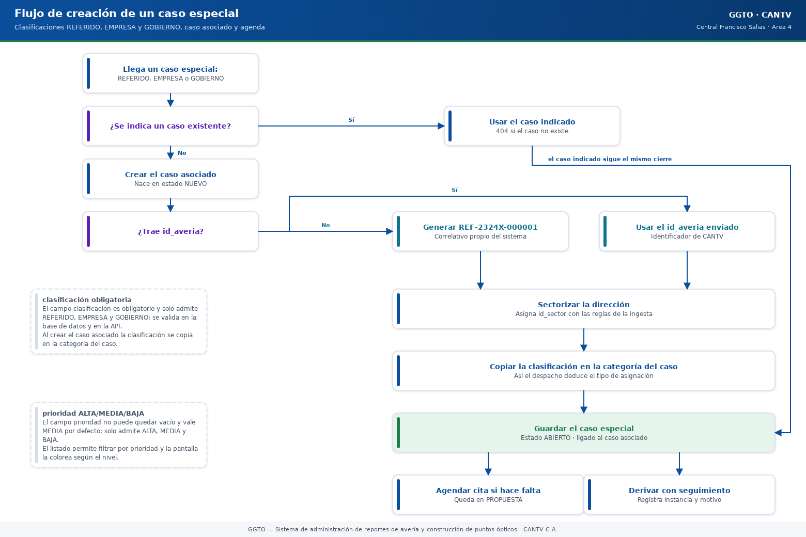
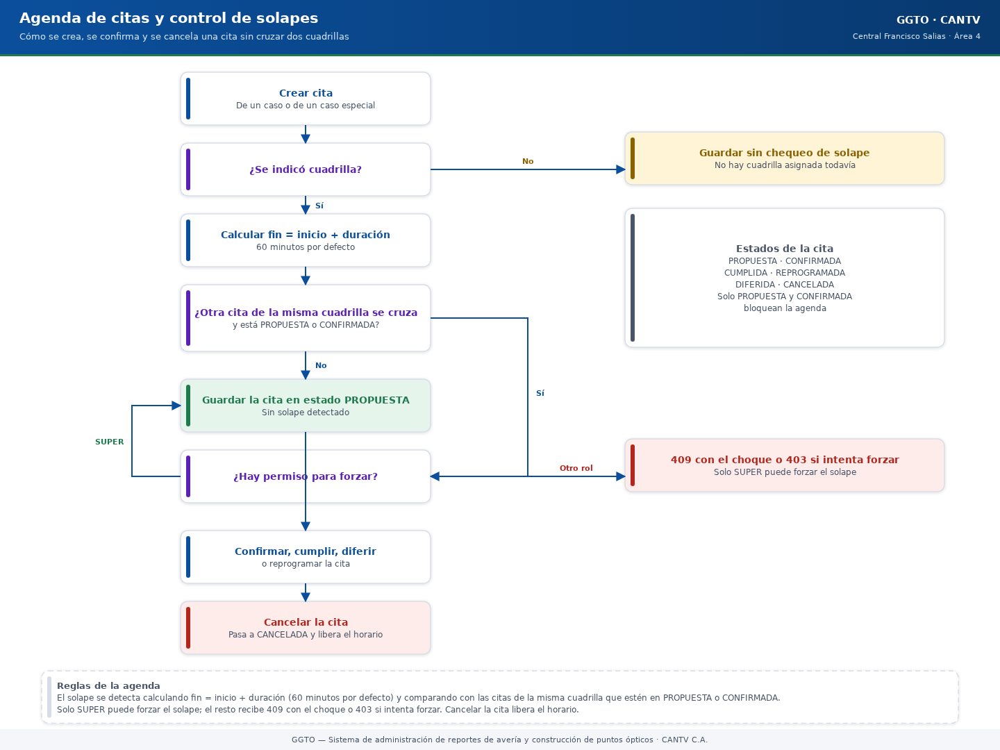

Sistema de administración de reportes de avería y construcción de puntos ópticos
Manual literal · Implementación06 — Seguimiento, casos especiales y agenda
Manual para todo público. Explica, en lenguaje sencillo, cómo funcionan en GGTO los casos especiales (referidos, empresas y gobiernos), la agenda de citas y el seguimiento de casos derivados a otras instancias. GGTO es el Sistema de administración de reportes de avería y construcción de puntos ópticos de CANTV C.A., Central Francisco Salias (Área 4). Este manual no promete funciones que todavía no existen: cuando algo está pendiente, lo dice con claridad.
Manual para todo público. Explica, en lenguaje sencillo, cómo funcionan en GGTO los casos especiales (referidos, empresas y gobiernos), la agenda de citas y el seguimiento de casos derivados a otras instancias. GGTO es el Sistema de administración de reportes de avería y construcción de puntos ópticos de CANTV C.A., Central Francisco Salias (Área 4). Este manual no promete funciones que todavía no existen: cuando algo está pendiente, lo dice con claridad.
1Empezar en 5 minutos
Si es tu primer día con ESPECIALES, AGENDA y seguimiento, con estos cinco pasos ya puedes ubicarte.
- Entra por la barra superior. Busca las secciones ESPECIALES y AGENDA. En
ESPECIALES verás los casos
REFERIDO,EMPRESAyGOBIERNO; en AGENDA, las citas. - Registra el caso especial. El sistema pide la clasificación (referido, empresa o
gobierno), el tipo de actividad (reparación o construcción) y los datos del
solicitante (la persona externa que reporta). Si el caso no existía, el sistema lo crea
con un identificador
REF-…. - Agenda la cita. Entra a AGENDA, crea la cita con fecha y hora, y elige la cuadrilla. Si la cuadrilla ya tiene una cita a esa hora, el sistema avisa con un conflicto 409 y no la guarda. Solo el Super Usuario puede forzar el solape.
- Deriva el caso si hace falta. Con seguimiento envías el caso a otra instancia o cola.
Al hacerlo, el caso pasa a
ENRUTADOy sale del despacho de calle. - Consulta el resultado. Cuando la otra instancia devuelve el caso, el seguimiento pasa a
DEVUELTOy el caso vuelve aNUEVO, listo para entrar otra vez al despacho.
2Visión general (RF-12, RF-34..RF-36, D-30/D-53)
Este manual cubre el Ciclo 6 del proyecto GGTO:
- Los casos especiales (
REFERIDO,EMPRESAyGOBIERNO) con su solicitante. - La agenda de citas, con control de solapamiento por cuadrilla.
- El seguimiento de casos derivados a otras instancias.
Las tres capacidades comparten el mismo conjunto de direcciones del sistema y atienden los requisitos RF-06, RF-12, RF-34, RF-35, RF-36 y RNF-04.
La decisión D-30 fijó la ficha de casos especiales: solicitante con unidad, nombre, contacto y canal, más prioridad y clasificación. La decisión D-53 da por completado el Ciclo 6, con:
- Casos especiales funcionando.
- Agenda sin solapamiento por cuadrilla, con duración configurable, respuesta 409 con el
choque y permiso de forzar solo para
SUPER. - Seguimiento que enruta el caso y lo saca del despacho.
- Las páginas ESPECIALES y AGENDA.
- 111/111 pruebas y el despliegue
ggto-web-00008-vr5(imagenv8).
2.1Alcance funcional
| Requisito | Descripción en palabras sencillas |
|---|---|
| RF-12 | Contactar y acordar hora con el cliente, y gestionar la agenda interna. |
| RF-34 | Gestionar el seguimiento de casos derivados a otras instancias o colas. |
| RF-35 | Gestionar casos de EMPRESA (reparación o construcción) y su cita. |
| RF-36 | Gestionar casos REFERIDO sin id_averia, priorizados, con identificador REF-…. |
| RNF-04 | Agenda sin solapamiento por cuadrilla. |
2.2Archivos de referencia
Esta tabla es para quien necesite ubicar el código. El resto del manual no la necesita para operar el sistema.
| Capa | Archivo |
|---|---|
| Direcciones de la API | app/api/routes_especiales.py |
| Esquemas de validación | app/schemas/especiales.py |
| Modelos de base de datos | app/models/especiales_entities.py |
Definición de tablas y función REF-… |
RepoTecnico/db/schema.sql |
| Páginas web | app/web/src/pages/Especiales.tsx, app/web/src/pages/Agenda.tsx |
| Pruebas de integración | app/tests/test_especiales_api.py |
El módulo se monta con el prefijo general /api/v1. Las escrituras exigen ADMIN o
SUPERVISOR; el rol SUPER tiene permiso total.
3Casos especiales
Un caso especial es un subtipo de caso: REFERIDO, EMPRESA o GOBIERNO. Se registra con
un caso asociado o sin él; cuando no existe el caso, el sistema lo crea automáticamente.

Código del gráfico (Mermaid)
flowchart TD
A["Llega un caso especial:<br/>REFERIDO, EMPRESA<br/>o GOBIERNO"] --> B{"¿Se indica un<br/>caso existente?"}
B -- "Sí" --> C["Usar el caso indicado<br/>(404 si no existe)"]
B -- "No" --> D["Crear el caso asociado<br/>estado NUEVO"]
D --> E{"¿Trae id_averia?"}
E -- "No" --> F["Generar REF-2324X-000001"]
E -- "Sí" --> G["Usar el id_averia enviado"]
F --> H["Sectorizar la dirección"]
G --> H
H --> I["Copiar la clasificación<br/>en la categoría del caso"]
C --> J["Guardar el caso especial<br/>estado ABIERTO"]
I --> J
J --> K["Agendar cita si hace falta"]
K --> L["Derivar con seguimiento<br/>si hace falta"]3.1clasificación REFERIDO/EMPRESA/GOBIERNO
El campo clasificacion es obligatorio y solo admite tres valores: REFERIDO, EMPRESA y
GOBIERNO. Se valida en la base de datos y también en la validación de la API, así que no se
puede escribir otro valor.
Al crear el caso asociado, la clasificación se copia en la categoría del caso. Gracias a eso, el motor de despacho puede deducir el tipo de asignación y repartir el trabajo correctamente.
3.2prioridad ALTA/MEDIA/BAJA
El campo prioridad no puede quedar vacío y vale MEDIA por defecto. Solo admite tres
niveles: ALTA, MEDIA y BAJA.
- El listado permite filtrar por prioridad.
- La pantalla de ESPECIALES la muestra con un color distinto según el nivel.
3.3solicitante (unidad+nombre+contacto+canal)
El solicitante es el personal externo que reporta el caso. La tabla exige tres datos:
unidad, nombre y contacto. El canal solo admite TELEGRAM, MCP_IA, MANUAL o
CORREO.
Los topes de longitud son 120 caracteres para la unidad, 120 para el nombre y 60 para el
contacto. Si no se indica canal, queda MANUAL.
Al crear el caso especial hay dos vías mutuamente excluyentes:
id_solicitante: usar un solicitante que ya existe.crear_solicitante: crear el solicitante en la misma operación.
Si se envían las dos, la API responde 422 con el mensaje:
«Indique
id_solicitanteocrear_solicitante, no ambos»
Si se crea en línea, el sistema guarda el solicitante y obtiene su identificador. Si se referencia un identificador que no existe, responde 404.
3.4creación automática del caso REF-...
Cuando la petición no trae id_caso, el sistema crea el caso asociado. Sus pasos son:
- Resolver la central configurada.
- Obtener el
id_averia: el que envió el cliente o, si falta, uno generado por la función de base de datosgenerar_id_averia_ref. Esa función construye identificadores con la formaREF-<CÓDIGO_CENTRAL>-<NNNNNN>. Para la Central Francisco Salias produce valores comoREF-2324X-000001. - Rechazar duplicados con 409 y el mensaje «Ya existe un caso con id_averia …».
- Sectorizar la dirección con los patrones de la central.
- Crear el caso con:
origen="MANUAL".estado_actual="NUEVO".tipo_casoigual aCONSTRUCCIONsi el tipo de actividad es construcción, yREPARACIONen caso contrario.categoriaigual a la clasificación del caso especial.
El caso especial se guarda en estado ABIERTO y con tiene_id_averia=True cuando el caso
asociado existe.
La prueba de integración verifica que un referido sin id_averia recibe uno que empieza por
REF-2324X- y que el caso asociado queda con categoría REFERIDO.
4Endpoints de solicitantes y casos especiales (app/api/routes_especiales.py:50,57,103,124,173,183)
| Método y ruta | Rol | Resumen |
|---|---|---|
GET /api/v1/solicitantes |
Lectura | Lista solicitantes por unidad y nombre. |
POST /api/v1/solicitantes |
Escritura | Crea un solicitante. |
GET /api/v1/casos-especiales |
Lectura | Lista con filtros y resumen. |
POST /api/v1/casos-especiales |
Escritura | Ingresa un caso especial. |
GET /api/v1/casos-especiales/{id} |
Lectura | Ficha del caso especial. |
PATCH /api/v1/casos-especiales/{id} |
Escritura | Actualiza el caso especial. |
4.1Solicitantes
GET /solicitantesdevuelve el padrón ordenado por unidad y nombre.POST /solicitantescrea el solicitante, confirma el guardado y responde 201.
4.2Casos especiales
GET /casos-especialesacepta cuatro filtros:clasificacion,estado,prioridadysolo_pendientes. El filtro «solo pendientes» deja únicamente los estadosABIERTOyEN_PROCESO. El listado se enriquece con los campos calculados que se explican abajo.POST /casos-especialesexige al menos la clasificación y el tipo de actividad. Conid_casousa un caso existente (responde 404 si no existe) y sin él lo crea con la rutina ya descrita.GET /casos-especiales/{id}responde 404 con «Caso especial no encontrado» si el identificador no existe.PATCH /casos-especiales/{id}aplica solo los campos enviados:estado,prioridad,descripcion,requiere_informe,clasificacion,tipo_actividadeid_solicitante.
4.3Resumen de estado calculado
El sistema agrega a cada fila del listado unos campos de contexto que la pantalla usa para pintar los iconos. No se guardan: se deducen al vuelo.
| Campo | Regla |
|---|---|
sector_nombre |
Nombre del sector del caso asociado. |
solicitante_nombre / solicitante_unidad |
Datos del solicitante referenciado. |
pendiente |
El estado es ABIERTO o EN_PROCESO. |
asignado |
El caso está en un despacho. |
citado |
Tiene una cita en estado PROPUESTA o CONFIRMADA, por caso o por caso especial. |
gestion |
Está en gestión del supervisor, su estado es EN_GESTION o su despacho dice GESTIONADO. |
Estas marcas se calculan con consultas agregadas y se vuelcan sobre cada fila. En la pantalla se pintan con el componente de chips de estado.
5Agenda de citas
La agenda gestiona el compromiso de contacto o de atención con el cliente. Dicho simple: es el calendario del equipo, con la regla de que una cuadrilla no puede estar en dos citas a la misma hora.
5.1modelo cita
| Campo | Tipo | Qué significa |
|---|---|---|
id_cita |
número entero grande, clave | Identificador de la cita. |
id_caso |
entero grande, referencia a caso, opcional | Cita asociada a un caso. |
id_caso_especial |
entero, referencia a caso especial, opcional | Cita asociada a un caso especial. |
id_cuadrilla |
entero, referencia a cuadrilla, opcional | Cuadrilla responsable. |
fecha_hora |
fecha y hora | Fecha y hora de la cita. |
tipo |
texto corto | CONTACTO o ATENCION. |
estado |
texto corto | Estado de la cita. |
observacion |
texto largo | Nota libre. |
creado_por |
texto, referencia a usuario | Usuario que la agendó. |
Una regla garantiza que toda cita apunte a un caso: o tiene id_caso, o tiene
id_caso_especial; no puede tener los dos vacíos.
5.2validación de solapamiento (409)
- La duración por defecto de una cita es de 60 minutos.
- Los estados que bloquean la agenda son
PROPUESTAyCONFIRMADA. - Esa duración y esos estados se leen de la configuración
agenda.duracion_minutosyagenda.estados_bloqueantes, y si no están definidos se usan los valores por defecto.
Pendiente de confirmar: todavía no se ha confirmado si esas dos claves de configuración están sembradas en la base de datos. No aparecen en el archivo que define las tablas, así que hoy rigen los valores por defecto.
La validación de solapamiento solo actúa si hay cuadrilla asignada:
- Calcula el fin de la cita como la hora de inicio más la duración.
- Busca otra cita de la misma cuadrilla que esté en un estado bloqueante y cuyo intervalo se cruce con el de la nueva cita.
- Si hay choque, responde 409 con el detalle «La cuadrilla ya tiene una cita a las <fecha> (duración <n> min)».
El solapamiento se puede forzar con permitir_solape, pero solo el rol SUPER. Si otro
rol lo intenta, la API responde 403 con el mensaje:
«Solo el Super Usuario puede forzar solapamientos»
5.3estados
Los estados válidos de una cita son seis:
PROPUESTA, CONFIRMADA, CUMPLIDA, REPROGRAMADA, DIFERIDA y CANCELADA.
La pantalla ofrece acciones directas para confirmar, cumplir, diferir y cancelar una cita.
El borrado es lógico: no se elimina la fila. Al pedir eliminar, la cita pasa a CANCELADA.
Como ese estado no está entre los bloqueantes, la cita deja de ocupar la agenda. Así, después de
cancelar, se puede agendar otra cita en el mismo horario; la prueba de integración lo confirma.
5.4endpoints (routes_especiales.py:280,301,329,355)
| Método y ruta | Rol | Resumen |
|---|---|---|
GET /api/v1/citas |
Lectura | Agenda filtrada por rango, cuadrilla y estado. |
POST /api/v1/citas |
Escritura | Agenda una cita sin solapamiento. |
PATCH /api/v1/citas/{id_cita} |
Escritura | Reprograma o cambia el estado. |
DELETE /api/v1/citas/{id_cita} |
Escritura | Cancela la cita (responde 204). |
GET /citasordena por fecha y hora, y filtra por rango (desdeyhasta), por cuadrilla y por estado.POST /citasexigeid_casooid_caso_especial; si faltan los dos, responde 422. Valida que existan el caso, el caso especial y la cuadrilla (404 si alguno no existe). Al guardar, excluye el campo auxiliarpermitir_solapey registra quién la creó.PATCH /citas/{id_cita}valida el solapamiento solo si cambian la fecha y hora o la cuadrilla, y excluye la propia cita del chequeo (para que no choque consigo misma).DELETE /citas/{id_cita}responde 404 si no existe y 204 al cancelarla.

Código del gráfico (Mermaid)
flowchart TD
A["Crear cita:<br/>caso o caso especial,<br/>fecha, hora y cuadrilla"] --> B{"¿Se indicó<br/>cuadrilla?"}
B -- "No" --> C["Guardar sin<br/>chequeo de solape"]
B -- "Sí" --> D["Calcular fin =<br/>inicio + duración<br/>(60 min por defecto)"]
D --> E{"¿Otra cita de la misma<br/>cuadrilla se cruza<br/>y está PROPUESTA<br/>o CONFIRMADA?"}
E -- "No" --> F["Guardar la cita<br/>estado PROPUESTA"]
E -- "Sí" --> G{"¿Hay permiso<br/>para forzar?"}
G -- "SUPER" --> F
G -- "Otro rol" --> H["409 con el choque<br/>o 403 si intenta forzar"]
F --> I["Confirmar, cumplir,<br/>diferir o reprogramar"]
I --> J["Cancelar:<br/>pasa a CANCELADA<br/>y libera el horario"]6Seguimiento
El seguimiento registra la derivación de un caso a otra instancia o cola (RF-34). Dicho simple: es la libreta de traspasos, con la fecha de envío, la fecha de retorno y el estado.
6.1tabla seguimiento
| Campo | Tipo | Qué significa |
|---|---|---|
id_seguimiento |
número entero grande, clave | Identificador de la derivación. |
id_caso |
entero grande, referencia a caso | Caso derivado. Se borra en cascada con el caso. |
instancia_destino |
texto corto | Cola o área destino. |
motivo |
texto largo | Razón de la derivación. |
fecha_envio |
fecha y hora | Fecha de envío (por defecto, el momento actual). |
fecha_retorno |
fecha y hora | Fecha de retorno, si ocurrió. |
estado |
texto corto | EN_COLA / RESUELTO / DEVUELTO. |
observacion |
texto largo | Nota libre. |
usuario |
texto, referencia a usuario | Usuario que derivó. |
6.2exclusión del despacho
Al crear un seguimiento en estado EN_COLA, el caso pasa a estado_actual = "ENRUTADO". Como el
motor de despacho excluye explícitamente los estados CERRADO, CANCELADO y ENRUTADO, el caso
sale del despacho de calle hasta que se devuelva. La prueba de integración comprueba que un
caso enrutado no aparece en la propuesta.
Cuando el seguimiento pasa a DEVUELTO:
- El caso vuelve a
NUEVO. - El caso vuelve a
en_gestion_supervisor=False. - Se sella la fecha de retorno.
Con eso, el caso queda otra vez disponible para el despacho. La prueba de integración también cubre este regreso.
6.3endpoints (routes_especiales.py:369,387,409,433)
| Método y ruta | Rol | Resumen |
|---|---|---|
GET /api/v1/seguimiento |
Lectura | Lista derivaciones con filtros. |
POST /api/v1/seguimiento |
Escritura | Deriva un caso a otra instancia. |
PATCH /api/v1/seguimiento/{id} |
Escritura | Actualiza estado o datos. |
GET /api/v1/seguimiento/{id} |
Lectura | Ficha de la derivación. |
GET /seguimientoordena por número de seguimiento descendente y filtra por caso, estado e instancia destino (búsqueda por parecido en el destino).POST /seguimientoresponde 404 si el caso no existe y registra al usuario que deriva.PATCH /seguimiento/{id}aplica solo los campos enviados. Si el nuevo estado esDEVUELTO, restituye el caso.GET /seguimiento/{id}responde 404 con «Seguimiento no encontrado» si no existe.
7Esquemas (app/schemas/especiales.py) y modelos (app/models/especiales_entities.py)
7.1Esquemas Pydantic
El archivo define los literales compartidos y estos modelos:
| Esquema | Para qué sirve |
|---|---|
SolicitanteCreate / SolicitanteOut |
Alta y lectura de solicitantes. |
CasoEspecialCreate |
Alta, incluido crear_solicitante y los datos del caso. |
CasoEspecialUpdate |
Edición parcial. |
CasoEspecialOut |
Ficha más los campos de resumen calculados. |
CitaCreate / CitaUpdate |
Alta y edición de citas, incluido permitir_solape. |
CitaOut |
Lectura de citas. |
SeguimientoCreate / SeguimientoUpdate |
Alta y edición de derivaciones. |
SeguimientoOut |
Lectura de derivaciones. |
El campo crear_solicitante se documenta como «Crea el solicitante en la misma operación». Los
esquemas de lectura se arman directamente desde las entidades de base de datos.
7.2Modelos SQLAlchemy
El archivo de modelos declara cuatro entidades:
| Modelo | Tabla |
|---|---|
Solicitante |
solicitante |
CasoEspecial |
caso_especial |
Cita |
cita |
Seguimiento |
seguimiento |
Los comentarios del módulo identifican al Solicitante como «personal externo que reporta casos
especiales» y a la Cita como la agenda que «no admite solapamientos por cuadrilla».
8Páginas web ESPECIALES y AGENDA (app/web/src/pages/Especiales.tsx, Agenda.tsx)
Ambas páginas están dentro de la ruta protegida y se montan en /especiales y /agenda.
8.1ESPECIALES
La página ofrece:
- Filtros por clasificación, estado y prioridad.
- La casilla «Solo pendientes (ABIERTO / EN_PROCESO)».
- Una tabla de resultados con tipo de actividad, sector, prioridad, solicitante, estado y acción.
Cada fila es clicable:
- Si el caso especial tiene
id_caso, navega a CASOS y abre esa ficha. - Si no lo tiene, abre la ficha especial.
La ficha muestra: ID de caso especial, caso asociado, solicitante, clasificación, tipo de
actividad, sector, prioridad, estado, tiene_id_averia, requiere_informe, descripción y marcas
de tiempo.
La edición solo está disponible fuera del modo lectura y permite cambiar prioridad, estado,
requiere_informe y descripción. Al guardar, se envían únicamente los campos que cambiaron.
8.2AGENDA
La agenda es un calendario con tres vistas: Día, Semana y Mes.
- El rango visible se calcula según la vista: un día, la semana de lunes a domingo, o la rejilla mensual completa.
- La carga pide las citas del rango, desde las
T00:00:00hasta lasT23:59:59, con filtros opcionales de cuadrilla y estado.
La ficha de una cita permite:
- Confirmar, cumplir, diferir y cancelar.
- Reprogramar la fecha.
- Eliminar la cita (lo que en realidad la cancela).
La casilla «Forzar solape» solo se habilita si el rol del usuario es SUPER. Los errores 409
y 403 se traducen a mensajes que empiezan por «Solapamiento: …» y «Sin permiso: …».
La ayuda que aparece bajo el formulario recuerda dos cosas: que se exige al menos un ID de caso o de caso especial, y que solo el Super Usuario puede forzar el solape.
9Pruebas (app/tests/test_especiales_api.py 15)
La Fase 4 registra este archivo con 15 pruebas de integración para referidos, empresas y gobierno, solicitante y seguimiento, dentro del total 169/169 en verde. El plan de pruebas asigna a las pruebas E2E-04 y E2E-05 la cobertura de especiales y agenda para RF-12 y RF-35/RF-36.
9.1Escenarios cubiertos por la suite de integración
| Escenario | Qué se verifica |
|---|---|
| EMPRESA crea caso y solicitante | Responde 201; el caso y el solicitante quedan creados con identificador; tiene_id_averia. |
REFERIDO sin id_averia |
El sistema genera REF-2324X-… y la categoría queda REFERIDO. |
| Filtros y actualización | Filtra por clasificación y prioridad; la edición a ATENDIDO funciona; el filtro de pendientes. |
| Crear cita | Responde 201 y la cita nace en estado PROPUESTA. |
| Cita requiere referencia | Sin caso ni caso especial, responde 422. |
| No solapamiento | A 30 minutos responde 409; a 90 minutos responde 201. |
| Cita cancelada no bloquea | La cancelación responde 204 y una nueva cita a 15 minutos se acepta. |
| Actualizar cita valida solape | Una edición en conflicto responde 409; fuera de la ventana responde 200. |
| Listado por rango | El rango devuelve al menos una cita. |
| Derivar y devolver | Pasa a ENRUTADO y sale del despacho; al volver a DEVUELTO regresa a NUEVO. |
| Seguimiento inexistente | Responde 404. |
| Filtros de seguimiento | Por instancia destino y por estado EN_COLA. |
| TECNICO solo lectura | La lectura responde 200; crear especiales y seguimiento responde 403. |
| Sin token | Responde 401. |
| SUPER fuerza solape | SUPER obtiene 201; ADMIN obtiene 403. |
El entorno de pruebas prepara un sector, una cuadrilla y un caso base, y expone sus identificadores para las pruebas. Así se cubren las tres verticales del módulo —especiales, agenda y seguimiento— además del control de acceso por rol.
Modo de pruebas: para no mezclar datos, las pruebas usan la variable DB_SCHEMA con
esquemas aislados: ggto_test para las pruebas de backend con pytest y ggto_e2e para las
pruebas de navegador con Playwright. La suite de navegador cerró en 46/46, y las herramientas
de calidad (ruff, mypy y tsc en modo estricto) no arrojaron hallazgos.